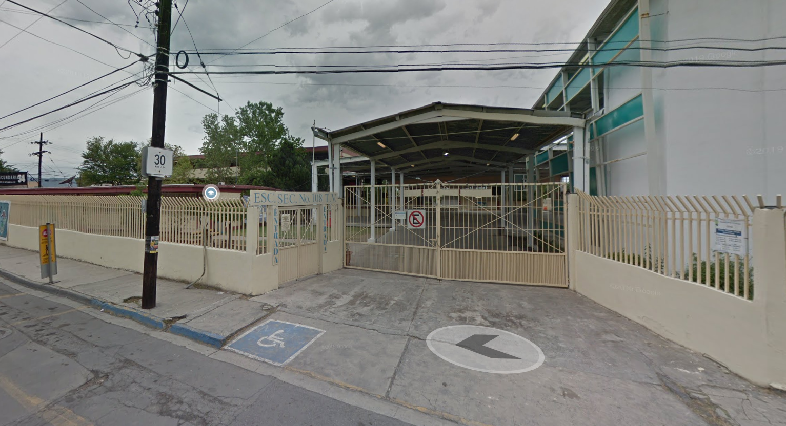
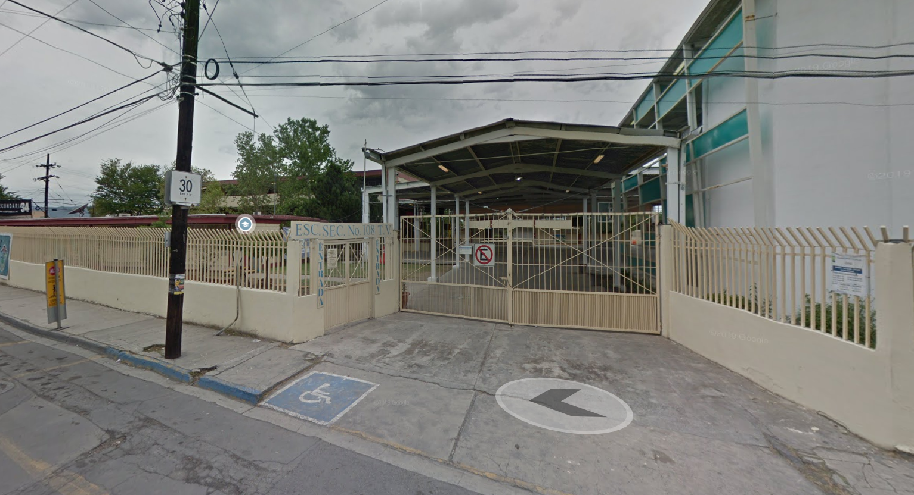
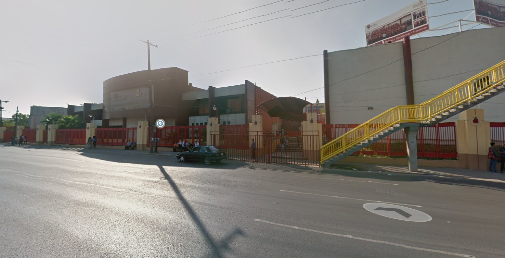
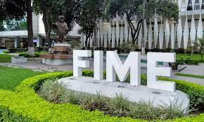
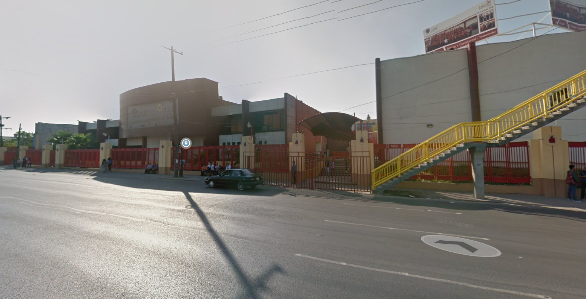
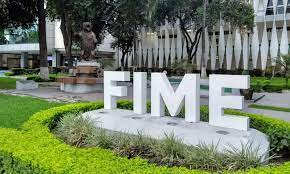

1.1. Ciudad de Monterrey, N.L.
1.1. Ciudad de Monterrey, N.L.
 1.3. Imagen del segundo kinder donde estuve.

1.5. Imagen de la secundaria a la que asisti.
1.3. Imagen del segundo kinder donde estuve.

1.5. Imagen de la secundaria a la que asisti.
 1.7. Imagen de la rondalla y algunos de sus integrantes.
1.7. Imagen de la rondalla y algunos de sus integrantes.
Nacimiento
Mi nombre es Abiud Misael Benitez Franco y naci en la ciudad de Monterrey N.L. mi padre se llama David Benitez Macias y mi madre se llama Claudia Maricela Franco Estrada. Desde muy pequeño mi familia fue condenada a vivir en miseria a causa del tipo de mentalidad que se llevaba en la familia, aunque esto fue cambiando con el tiempo a ser un poco mejor para toda la familia.
Mi vida escolar
Mis estudios empezaron en un kinder que se encuentra por mi casa el cual era un poco pequeño, aunque de lo unico que recuerdo es que estuve ahi el primer año de kinder, usualmente ese año no se lleva en el kinder, en mi caso como tenia un hermano mayor nos metieron a los dos a la vez para que estemos juntos. Despues de eso, solo estuve el primer año en ese kinder los otros dos nos movieron a uno el cual esta cerca de la casa de mis abuelos maternos para tener mejor comodidad al momento de ir a este, ya que, en el anterior teniamos que ir a una pecera el cual es como un camion urbano pero pequeño y es este nos podian llevar hasta allá y despues de eso nos podiamos regresar caminando.
En el caso de mi primaria, estuve en una primaria la cual esta pegada al segundo kinder en el que estuve. La primaria no fue la gran cosa a diferencia de otras, ya que, al ser publica no tenia tantas actividades y demas cosas a diferencias de otras, esto lo digo por que recuerdo que mi papá trabajaba en aquel entonces en un colegio privado por la zona de San Pedro llamado Colegio Himalaya y en varias ocaciones llegaron a hacer como fiestas o carnavales donde llevaban juegos mecanico o alguinas veces los propios alumnos hacian sus propias dinamicas para implementar en ese dia, algo que en las primarias publicas por alguna razón no existe.
Durante la secundaria fue mi epoca mas extraña por asi decirlo, ya que, es esta fue en la epoca en que mas cosas conocí y experimente, entre ellas fue el hecho de que fue mi primera vez estando de turno de tarde en cualquier grado academico y que tambien fue donde mas cambio tuve en personalidad y manera de pensar, aunque creo que a esta edad es una de las cosas mas normales.
Recuerdo que en mi primer año fue uno de los peores, ya que, es este pase por una faceta rebelde por asi decirlo, fue el año que mas cerca estuve de reporbar una materia por primera vez en mi vida, y tambien fue donde me empeze a juntar con personas que no eran muy buenas.
Despues en mi segundo año fue en el que mas me compuse, le dedique mas tiempo a los estudios y mis amistades fueron mejorando, los amigos que hice en primero se terminaron alejando ya que yo no era como ellos pero en cambio hice nuevos en segundo que eran mas como yo y que hasta la fecha tengo contacto con uno de ellos aun, este año fue uno de los que mas me marco academicamente hablando ya que me di cuenta que era bueno en las matematicas y asi decidi ir por una carrera donde las matematicas no necesariamente son muchas pero si son un muy gran fuerte.
Y para finalizar esta el tercer año, que fue como una revolucion en mi vida, en este caso yo ya habia decidido cambiar mi manera de ser, el problema es que en segundo habia algo que me retenia y fue en tercero donde ams libertades me iba a tomar, en este caso todos mis amigos fueron separados de mi, pero aun asi no me detuvo para hacer mas, en este año no fue la gran cosa lo mejor fue que me pude liberar de las cadenas sociales que me retenian en los dos años anteriores.
Despues de la secundaria viene la preparatoria, yo estudie en la Escuela Industrial y Preparatoria Tecnica Álvaro Obregon y me gradue con un titulo tecnico en proramación web, en el ambito academico no fue la gran cosa, ya que, no aprendi mucho mas alla de lo que marcaba el plan de estudios de mi carrera como en el caso contrario de otros amigos que tuve, pero aun asi siento que avance mucho en mi razonamiento logico y pienso que me ayudara mucho en mi carrera universitaria ya que se enfoca en lo mismo. En cuanto a mis amigos la mayoria de ellos los conoci en primer semestre aunque esto no significa que me haya hecho amigos de ellos inmediatamente los conociera pero me ayudo a mas adelante a poder comunicarme con ellos.
Una de las mejores experiencias que tuve en la preparatoria fue pertenecer al grupo de la rondalla ya que me ayudaron a desenvolverme mas con la gente y tambien a darme una introduccion en la musica, aqui tambien fue donde conoci a mas amigos aunque claro no todos ellos fueron para siempre pero como minimo uno de ellos si lo fue, tambien gracias al cambio de mentalidad que tuve me atrevi a hacer cosas que jamas me atrevi a hacer en otros lugares o momentos en mi vida esto con el objetivo de poder hacerlos ams a futuro cuando mas lo necesite.
Despues sigue mi carrera universitaria, aunque esta no esta muy avanzada ya he tenido demaciados malos momentos con ella, para empezar el hecho de que ni conozco las aulas de mi facultad a causa de una pandemia que azoto al mundo el año en que entre y luego el hecho de tener horarios mal hechos que no te dejan tiempo ni accesibilidad para hacer cosas como trabajar, despues no es como que la facultad cuente con docentes muy buenos y los que son no serviran de mucho si los pasados no fueron buenos ya que no tendras el conocimiento completo. En otras palabras, esta es la fase mas dificil de mi vida, fue cuando me di cuanta que no podia hacer lo que segun yo si sabia hacer y muchas mas cosas.
 1.2. Ubicación de la ciudad de Monterrey en el mapa.
1.2. Ubicación de la ciudad de Monterrey en el mapa.
 1.4. Primaria a la que asisti.

1.6. Preparatoria a la que asistí.

1.8. Facultad a la que actualmente asisto.
1.4. Primaria a la que asisti.

1.6. Preparatoria a la que asistí.

1.8. Facultad a la que actualmente asisto.